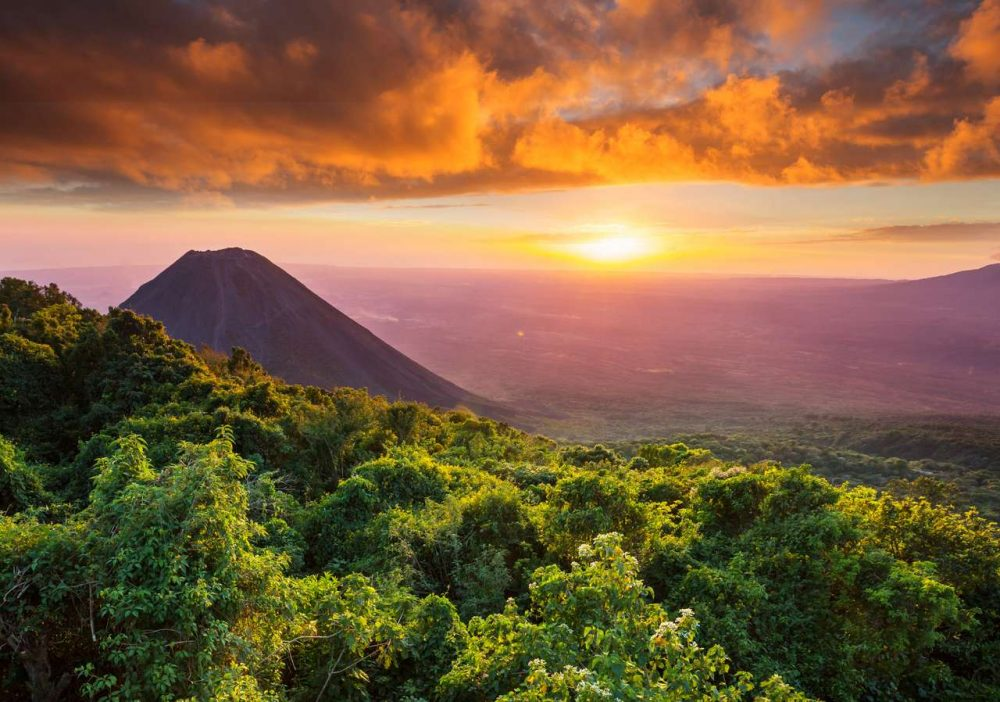
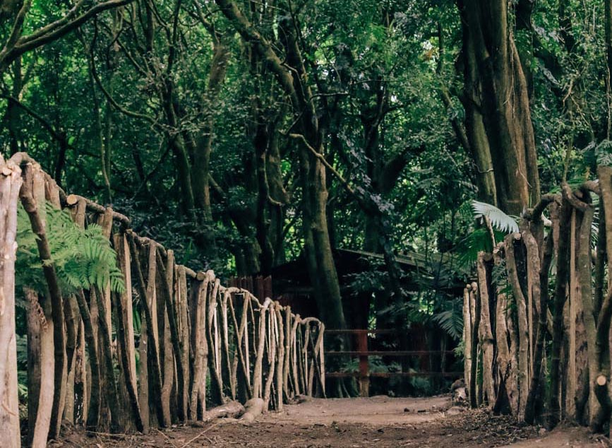
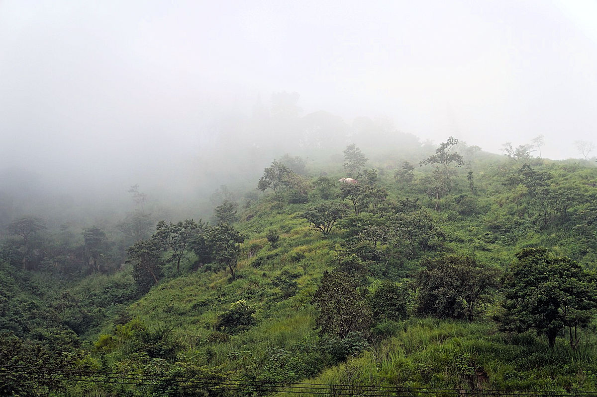

Historia
Cerro Verde es un parque nacional ubicado en el occidente de El Salvador,
que forma parte del sistema de volcanes de Izalco, Santa Ana y Cerro Verde.
Su área protegida fue establecida para conservar la biodiversidad y los bosques
de niebla que lo rodean. Es un destino popular para senderismo, observación de aves
y disfrutar de vistas panorámicas de los volcanes y lagos cercanos.
Ubicación
Se encuentra en el departamento de Santa Ana, a aproximadamente 70 km de San Salvador.
El parque es accesible desde la Carretera Panamericana, con caminos señalizados hacia el parque.
¿Por qué es famoso?
- Vistas panorámicas: Desde sus miradores se pueden observar los volcanes Izalco y Santa Ana, así como el Lago de Coatepeque. (El Salvador Travel)
- Biodiversidad: Alberga una gran variedad de aves, mamíferos y plantas endémicas de bosque nuboso. (MARN)
- Senderismo: Ofrece rutas bien señalizadas para caminatas cortas y largas, ideales para ecoturismo y aventura.
Qué hacer en Cerro Verde
- Senderismo: Explorar los senderos hacia los miradores y bosques del parque.
- Observación de volcanes: Disfrutar de vistas espectaculares del Izalco, Santa Ana y otros alrededores.
- Fotografía de naturaleza: Capturar la flora, fauna y paisajes únicos del parque.
- Avistamiento de aves: Observar aves endémicas y migratorias en su hábitat natural.
Cómo llegar
En vehículo privado:
- Toma la Carretera Panamericana (CA-1) hacia Santa Ana.
- Desde Santa Ana, sigue las señales hacia Cerro Verde.
En transporte público:
- Desde la Terminal de Occidente en San Salvador, toma un autobús hacia Santa Ana.
- Desde Santa Ana, toma un taxi o transporte local hasta Cerro Verde.
Galería



⬅ Volver a Lugares